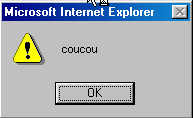
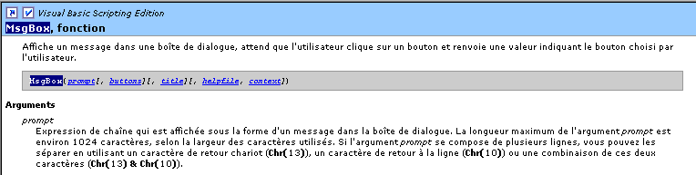

2. سياقات تشغيل VBSCRIPT
2.1. مقدمة
لا يتم تشغيل برنامج vbscript مباشرةً في نظام Windows، بل يتم تشغيله داخل حاوية توفر له سياقًا للتنفيذ وعددًا من الكائنات الخاصة به. علاوة على ذلك، يمكن لبرنامج vbscript استخدام الكائنات التي يتيحها نظام Windows، وهي كائنات تُسمى ActiveX.
 |
في هذا المستند، سنستخدم حاويتين: Windows Scripting Host الذي يُعرف عمومًا باسم WSH، ومتصفح Internet Explorer الذي يُشار إليه أحيانًا فيما يلي باسم IE. وهناك العديد من الحاويات الأخرى. فعلى سبيل المثال، تُعد تطبيقات MS-Office حاويات لمشتق من VB يُسمى VBA (Visual Basic for Applications). كما توجد العديد من تطبيقات ويندوز التي تتيح لمستخدميها تجاوز حدودها من خلال السماح لهم بتطوير برامج تعمل داخل التطبيق وتستخدم الكائنات الخاصة به.
يلعب الحاوية التي يتم فيها تشغيل برنامج VBScript دورًا أساسيًّا:
- فالكائنات التي يتيحها الحاوية لبرنامج VBScript تختلف من حاوية إلى أخرى. وهكذا، يتيح WSH لبرنامج VBS كائنًا يُسمى WScript يتيح الوصول، على سبيل المثال، إلى الموارد المشتركة وطابعات الشبكة في الجهاز المضيف. أما IE، فيوفر لبرنامج VBS كائنًا يُسمى document يمثل المستند HTML المعروض بالكامل. وبذلك يصبح بإمكان برنامج VBS التعامل مع هذا المستند. أما برنامج Excel فيوفر لبرنامج VBA كائنات تمثل المصنفات وأوراق المصنفات والرسوم البيانية، وما إلى ذلك... أي جميع الكائنات التي يتعامل معها برنامج Excel.
- ورغم أن كائنات الحاوية تمنح برنامج VBScript كامل قوته، إلا أنها قد تحد أحيانًا من بعض مجالات عمله. فعلى سبيل المثال، لا يمكن لبرنامج VBScript الذي يتم تنفيذه في المتصفح IE الوصول إلى القرص الصلب للجهاز المضيف، وذلك لأسباب أمنية.
لذلك، عند الحديث عن برمجة VBScript، يجب تحديد الحاوية التي يتم تنفيذ البرنامج فيها.
في نظام ويندوز، لغة VBScript ليست اللغة الوحيدة التي يمكن استخدامها في الحاويات WSH أو IE. فمن الممكن، على سبيل المثال، استخدام JScript (=JavaScript)، أو PerlScript (=Perl)، أو Python، ... ويبدو عدد من هذه اللغات، للوهلة الأولى، متفوقًا على VBScript. لكن هذه الأخيرة تتمتع مع ذلك بمزايا جادة:
- تنتشر لغة VB ومشتقاتها VBSCRIPT وVBA على نطاق واسع على أجهزة ويندوز. ويبدو أن معرفة هذه اللغة أمر لا غنى عنه.
- إن ما يمنح البرنامج قوته هو الكائنات التي يمكنه استخدامها أكثر من اللغة التي يعمل بها. ومع ذلك، فإن العديد من هذه الكائنات يتم توفيرها بواسطة الحاويات وليس بواسطة اللغات نفسها.
من عيوب لغة VBSCRIPT أنها غير قابلة للنقل إلى أنظمة أخرى غير ويندوز، مثل يونكس. في حين أن لغات منافسة لها، مثل جافا سكريبت وبيرل وبايثون، قابلة للنقل. وإذا كان علينا العمل على أنظمة متنوعة، فقد يكون من المفيد بل ومن الضروري استخدام نفس اللغة على الأنظمة المختلفة.
2.2. الحاوية WSH
يتيح الحاوية WSH (Windows Scripting Host) تنفيذ البرامج المكتوبة بلغات مختلفة داخل نظام Windows، مثل: vbscript، javascript، perlscript، python، ... وهناك معيار يجب الالتزام به حتى يمكن استخدام لغة ما داخل WSH. وأي لغة تلتزم بهذا المعيار تكون مؤهلة للتنفيذ داخل WSH. ويمكن تصور أن القائمة السابقة للغات التي يتم تنفيذها في WSH قد تتوسع. توفر الحاوية للبرامج التي تقوم بتنفيذها كائنات تمنحها قوتها الحقيقية. وهذا يساهم في إزالة الفروق بين اللغات، حيث إنها تستخدم جميعًا نفس مجموعة الكائنات. وبالتالي، قد يصبح استخدام لغة ما بدلاً من أخرى مسألة تفضيل شخصي بحت، وليس مسألة أداء.
يتم تنفيذ برنامج في WSH باستخدام ملفين قابلين للتنفيذ: wscript.exe و cscript.exe. يوجد ملف wscript.exe عادةً في مجلد تثبيت Windows الذي يُسمى عادةً %windir%:
C:\ >echo %windir%
C:\WINDOWS
C:\>dir c:\windows\wscript.exe
WSCRIPT EXE 123 280 19/09/01 11:54 wscript.exe
L'exécutable cscript.exe se trouve lui sous %windir%\command :
C:\>dir c:\windows\cscript.* /s
Répertoire de C:\WINDOWS\COMMAND
CSCRIPT EXE 102 450 26/06/01 17:49 cscript.exe
الحرف w في wscript يشير إلى windows، والحرف c في cscript يشير إلى console. يمكن تنفيذ البرنامج النصي باستخدام wscript أو cscript دون فرق. ويكمن الاختلاف في طريقة عرض الرسائل على الشاشة:
- حيث يعرضها wscript في نافذة
- بينما يعرضها cscript مباشرةً على الشاشة
فيما يلي برنامج نصي coucou.vbs يعرض coucou على الشاشة:

لنفتح نافذة DOS ونقوم بتنفيذها بالتتابع مع wscript و cscript:
DOS>wscript coucou.vbs

DOS>cscript coucou.vbs
Microsoft (R) Windows Script Host Version 5.6
Copyright (C) Microsoft Corporation 1996-2001. Tous droits réservés.
coucou
يظهر بوضوح أعلاه الفرق بين الوضعين. في هذا المستند، سنستخدم بشكل حصري تقريبًا وضع وحدة التحكم cscript. هذا هو الوضع المناسب للتطبيقات التي تُعرف باسم "التطبيقات الدفعية"، أي التطبيقات التي لا تتطلب تفاعلًا مع المستخدم عبر لوحة المفاتيح. تجدر الإشارة إلى نقطتين في النتائج السابقة:
- افترضنا أن الملفين التنفيذيين wscript.exe و cscript.exe موجودان كلاهما في مجلد «PATH» على الجهاز، مما يسمح بتشغيلهما بمجرد كتابة اسميهما. لو لم يكن الأمر كذلك، لكان من الضروري كتابة ما يلي هنا:
- تجدر الإشارة إلى أن إصدار wsh المستخدم في هذا المثال وفي بقية الوثيقة هو الإصدار 5.6.
- ملف مصدر البرنامج النصي يحمل اللاحقة .vbs. هذه هي اللاحقة التي تشير إلى برنامج نصي vbscript، بينما يُشار إلى برنامج نصي javascript باللاحقة .js.
يحتوي البرنامج cscript على خيارات تشغيل متنوعة يمكن الحصول عليها عن طريق تشغيل cscript بدون معلمات:
المعلمة //nologo تُزيل عرض شعار wsh:
2.3. شكل البرنامج النصي WSH
لقد رأينا للتو البرنامج النصي الأول: coucou.vbs

لقد أشرنا إلى أن اللاحقة .vbs للملف تشير إلى سكريبت vbscript. وهذا ليس إلزامياً. كان بإمكاننا وضع السكريبت في ملف بلاحقة .wsf بالشكل التالي الأكثر تعقيداً:

يؤدي تنفيذ هذا البرنامج النصي إلى النتيجة التالية:
يمكن أن يخلط البرنامج النصي WSH بين اللغات:

يؤدي تنفيذ هذا البرنامج النصي إلى النتيجة التالية:
سنستخلص النقاط التالية:
- الحاوية WSH غير مرتبطة بأي لغة. يمكن لبرنامج نصي wsh أن يخلط بين اللغات في ملف بامتداد .wsf
- يتم تضمين البرنامج النصي بين العلامات <job id="..."> ... </job>
- داخل التطبيق (=job)، يتم تمييز اللغات المستخدمة في الأجزاء المختلفة من الكود بعلامات <script language="...."> .... </script>
- هذه اللغة الترميزية تحمل اسمًا: XML، وهو اختصار لـ «لغة الترميز eXtended». أما XML فلا تُعرِّف أي علامات، بل قواعد لتنظيم العلامات. لذلك، ينبغي أن نقول هنا إن لغة الترميز المستخدمة في برنامج نصي wsh تتبع المعيار XML.
وبعد ذلك، سنستخدم لغة vbscript حصريًّا في ملفات .vbs.
2.4. الكائن WSCRIPT
يوفر الحاوية WSH للبرامج النصية التي يقوم بتنفيذها كائنًا يُسمى wscript. ويحتوي الكائن على خصائص وأساليب:
 |
يحتوي الكائن Obj على خصائص Pi التي تحدد حالته. وبالتالي، يمكن أن يحتوي الكائن thermomètre على خاصية température. هذه الخاصية هي أحد جوانب حالة مقياس الحرارة. وقد تكون خاصية أخرى هي درجة الحرارة القصوى Tmax التي يمكن أن يتحملها.
قد يحتوي الكائن Obj على طرق Mj التي تسمح للعوامل الخارجية إما:
- معرفة حالته
- تغيير حالته
وبالتالي، فإن مقياس الحرارة لدينا، إذا كان إلكترونيًا، قد يحتوي على طريقة allumer لتشغيله، وطريقة أخرى éteindre لإيقاف تشغيله، وطريقة ثالثة afficher لعرض درجة حرارة التوازن بمجرد الوصول إليها. من الناحية البرمجية، الطريقة هي دالة يمكنها قبول معلمات وإرجاع نتائج.
في VBScript، تُرمز خصائص Pi لكائن Obj بـ Obj.Pi، وتُرمز الطرق Mj بـ Obj.Mj. يُعد الكائن wscript في WSH كائنًا مهمًا للطرق التي يتيحها للبرامج النصية. وهكذا، تتيح طريقة echo عرض رسالة. وصيغة هذه الطريقة هي كما يلي:
ثم يتم عرض قيم المعلمات argi في نافذة (عند التنفيذ بواسطة wscript) أو على الشاشة (عند التنفيذ بواسطة cscript ضمن DOS).
2.5. حاوية Internet Explorer
ذكرنا سابقًا أن Internet Explorer يمكن أن يكون حاوية لبرنامج نصي vbscript. لنوضح ذلك من خلال مثال بسيط. فيما يلي صفحة HTML (لغة الترميز HyperText) تسمى coucou2.htm ولا تحتوي على برنامج نصي vbscript.
21

يؤدي تحميلها مباشرةً عبر متصفح Internet Explorer (Fichier/Ouvrir) إلى النتائج التالية:
 |
يُظهر محتوى الملف coucou2.htm أن HTML هي لغة ترميز. إن معرفة لغة HTML تعني معرفة هذه العلامات. والغرض الرئيسي من هذه العلامات هو إرشاد المتصفح إلى كيفية عرض المستند. لا تتبع HTML معيار XML بدقة، لكنها قريبة منه.
في coucou2.htm، توجد معلومتان يجب عرضهما، وهما 1 و2. وقد قمنا بعرضهما أيضًا في الشاشة التي تم إنشاؤها. العلامة <title>...</title> هي التي أدت إلى وضع المعلومة 1 في شريط عنوان المتصفح، أما العلامة <body>..</body> فهي التي أدت إلى وضع المعلومة 2 في جزء المستند من المتصفح.
لن نتعمق أكثر في دراسة لغة HTML. لنقم بتعديل الملف coucou2.htm بإدخال نص برمجي vbscript فيه، ولنسماه الآن coucou1.htm:

تم وضع البرنامج النصي vbscript داخل العلامة <head>...</head>. وكان من الممكن وضعه في مكان آخر. يعرض البرنامج النصي عبارة «coucou» عند التحميل الأولي للصفحة. هنا، يجب أن يكون المتصفح هو Internet Explorer لأن هذا المتصفح هو الوحيد الذي يدعم بشكل افتراضي البرامج النصية vbscript. ويكون العرض الناتج كما يلي:

يتبعه العرض العادي للصفحة:

وكان البرنامج النصي الذي تم تنفيذه كما يلي:

في حين أن الحاوية WSH كانت توفر للبرنامج النصي كائنًا يُسمى wscript يُتيح عرض البيانات باستخدام طريقته echo، فإن IE هنا توفر للبرنامج النصي كائنًا باسم window، مما يسمح بعرض البيانات باستخدام الطريقة alert. وبالتالي، لعرض «coucou»، نكتب wscript.echo «coucou» في WSH وwindow.alert «coucou» في IE. يمكننا أن نوضح هنا أيضًا أنه يمكن في الواقع استخدام عدة لغات داخل الحاوية IE. نستعيد المثال الذي سبق عرضه في WSH داخل صفحة coucou3.htm:

يؤدي تحميل هذه الصفحة بواسطة IE إلى عرض ثلاث نوافذ معلومات أولاً:
 |  |  |
قبل عرض الصفحة النهائية:

2.6. يأتي برنامج المساعدة الخاص بـ WSH
يأتي برنامج WSH مزودًا بنظام مساعدة يقع عادةً في المجلد "C:\Program Files\Microsoft Windows Script\ScriptDocs". بالنسبة للإصدار 5.6 من WSH، يُسمى ملف المساعدة «SCRIPT56.CHM». يكفي النقر مرتين على هذا الملف للوصول إلى المساعدة. قد يكون من المفيد إنشاء اختصار له على سطح المكتب.
بمجرد تشغيله، ستظهر لك شاشة تشبه ما يلي:

يحتوي هذا الملف على تعليمات الحاوية WSH بالإضافة إلى تعليمات لغتي vbscript و javascript. إنها أداة لا غنى عنها لكل من المبتدئين والمبرمجين المتمرسين. هناك عدة طرق للاستفادة من هذه التعليمات:
- إذا لم نكن متأكدين تمامًا مما نبحث عنه، ونريد فقط اكتشاف ما هو متاح، فيمكننا عندئذٍ استخدام علامة التبويب Sommaire المذكورة أعلاه. يمكننا، على سبيل المثال، الاطلاع على ما هو متاح لـ vbscript:

ستجد في دليل VBscript العديد من المعلومات التي لا ترد في هذا المستند.
- يمكنك البحث عن شيء محدد، على سبيل المثال كيفية استخدام الدالة msgbox في VBscript. استخدم في هذه الحالة علامة التبويب Rechercher:

يعرض «المساعدة» جميع العناوين ذات الصلة بالكلمة التي تم البحث عنها. وبشكل عام، تكون العناوين الأولى المقترحة هي الأكثر صلة بالموضوع. وهذا هو الحال هنا، حيث يكون العنوان الأول المقترح هو العنوان الصحيح. يكفي النقر عليه مرتين للحصول على المعلومات المتعلقة بهذا العنوان:
